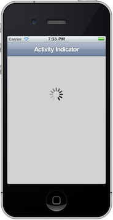
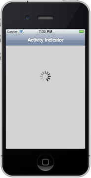
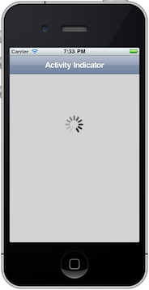

An activity indicator is that spinning weel of spokes used to show that the application is busy doing something, like loading data or updating a record. You can create an activity indicator using the $.UIActivityIndicator method. There are two ways in which you can implement an activity indicator. The first is to use $.UIActivityIndicator along with $.UIActivityIndicator.init, $.UIActivityIndicator.animate and $.UIActivityIndicator.stop. Consult the documentation for these in ChocolateChip.js. Using these methods allows you to put an activity indicator wherever you want in whatever you want. You choose when to start its animation and when to stop it. However, in most cases the second option will be more convenient: Element.UIInsertActivityIndicator. You execute it on the container in which you wish to display an activity indicator. It inserts a panel in which the activity indicator will be displayed. This panel gets its dimensions from the options you pass in as arguments:
To use this with an Ajax call, you first insert the activity indicator into the place where the content will be placed. Then as part of the Ajax call's successCallback function, remove the activity indicator and insert the content. If you get an error, you can also choose to delete the activity indicator and display an eror message. If you wanted, you could use the optional CSS for the activity indicator to position it on top of any content currently in a container before the Ajax call returns either a success or error. Please refer to Element.xhr in the documentation for ChocolateChip.js for more details about how to do Ajax calls with ChocolateChip-UI. When using this method the activity indicator begins spinning as soon as it is inserted. See example below.
Example:
var content = $("#content");
// First insert an activity indicator:
content.UIInsertActivityIndicator({
id: "activity_indicator_01",
color: "#fff",
container: "navbar > panel",
size: "40px",
style : "margin: 40px auto 0 auto;"
});
// Then make the Ajax call:
content.xhr("data.html", {
successCallback: function() {
// If the call is successful, empty the
// container to get rid of the activity indicator:
content.empty();
content.insert($.responseText);
$.responseText = null;
content.after($.make("<h2>Ajax call was successful.</h2>"));
},
errorCallback: function() {
// If there was an error, remove activity indicator:
content.empty();
content.insert("There was an error getting the file.");
}
});
Activity Indicator on right side of the navbar:
